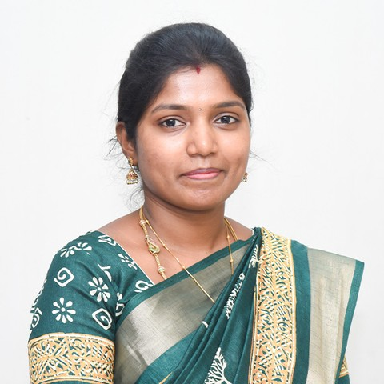

Acquire, transform, enhance, reconstruct and segment medical images — CT, MRI and X-ray — through eleven interactive experiments that run entirely in your browser.
What Medical Image Processing covers and how this virtual lab supports it.
Medical Image Processing deals with the acquisition, representation, enhancement, reconstruction and analysis of images produced by medical modalities — Computed Tomography (CT), Magnetic Resonance Imaging (MRI), X-ray and ultrasound.
The course introduces fundamental image operations, the 2-D Fourier transform, intensity and spatial-domain enhancement, image restoration and reconstruction (Radon / filtered back-projection and Fourier MRI reconstruction), colour processing, and segmentation techniques such as edge detection and the watershed algorithm.
Every experiment in this lab is interactive: choose a medical phantom or upload your own image, adjust the parameters, and watch the processed images and spectra update live — the same techniques that underpin modern computer-aided diagnosis and medical imaging systems.
Course faculty for Medical Image Processing.

Eleven interactive simulations covering image operations, transforms, enhancement, reconstruction and segmentation.
Topic areas covered by the laboratory and the outcomes you will achieve.
Basic operations, arithmetic and logical operations on medical images.
The 2-D Discrete/Fast Fourier Transform and frequency-domain analysis.
Intensity transforms, histogram equalisation, spatial filtering and colour processing.
Radon transform / filtered back-projection, Fourier MRI reconstruction and image fusion.
Edge detection and region segmentation using the watershed algorithm.
Standard texts for the study of Medical Image Processing.
Rafael C. Gonzalez & Richard E. Woods — Pearson, 4th Edition, 2018
Jiří Jan — CRC Press, 2nd Edition, 2019
Paul Suetens — Cambridge University Press, 3rd Edition, 2017
Gonzalez, Woods & Eddins — McGraw-Hill, 2nd Edition, 2010
Rangaraj M. Rangayyan — CRC Press, 2005
Launch the interactive workbench and run all eleven Medical Image Processing experiments right in your browser.
▶ Open Virtual Lab